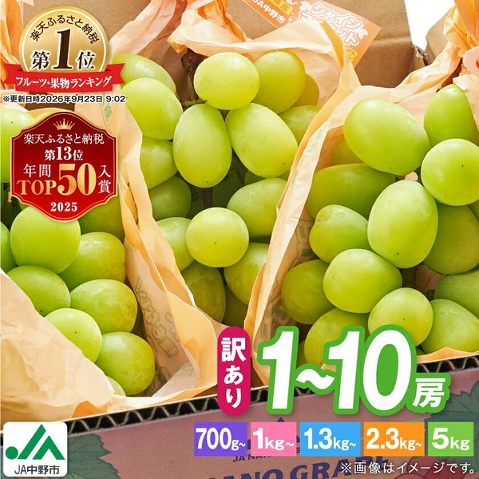
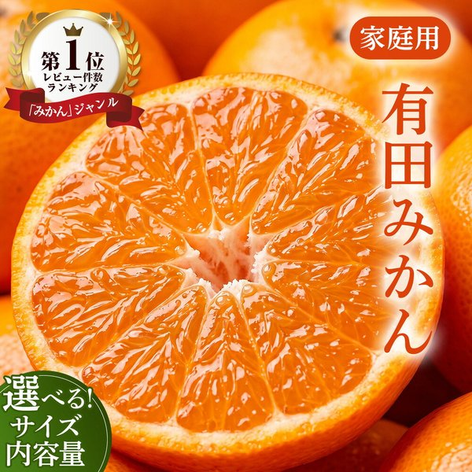
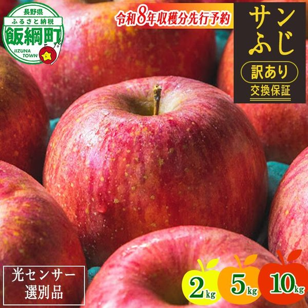
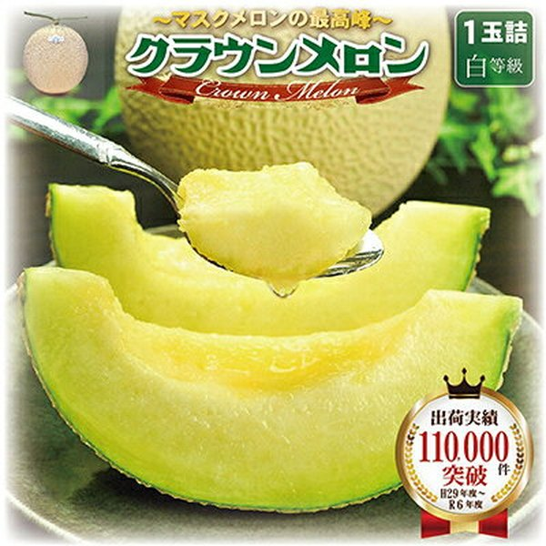
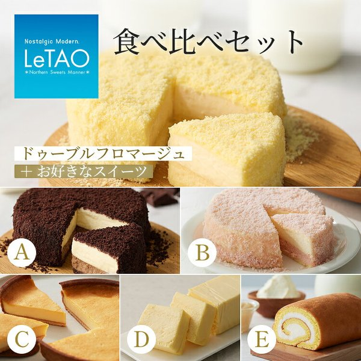
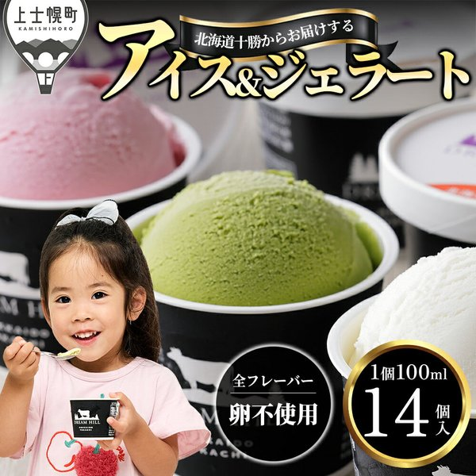
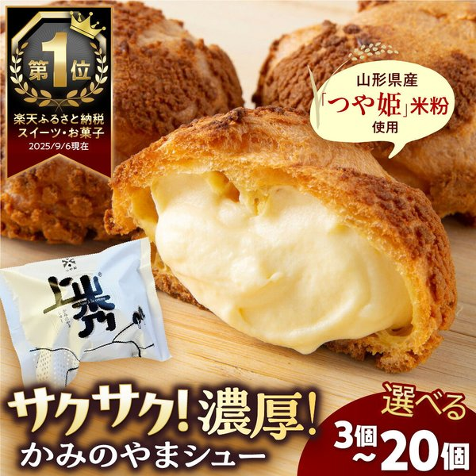
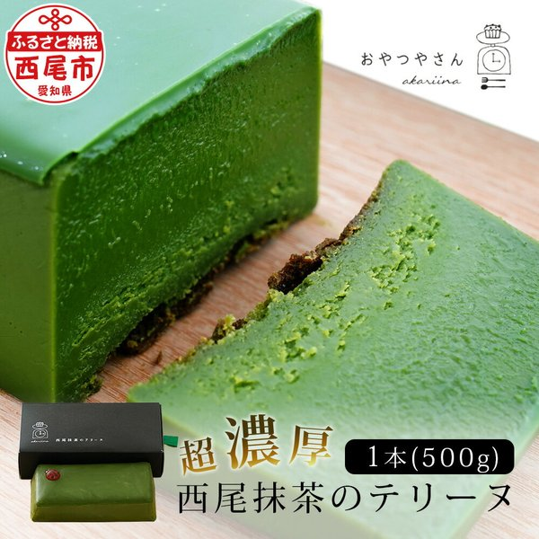
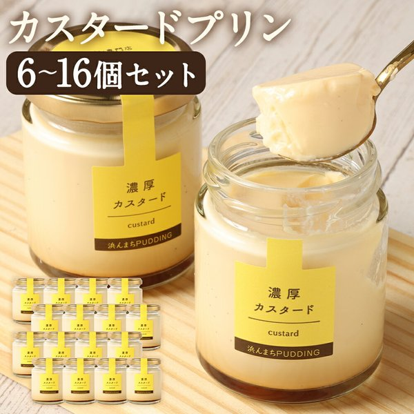

【2026年ふるさと納税】年末駆け込みで外さない！高評価フルーツ＆贅沢スイーツ返礼品おすすめ10選
ふるさと納税の年末は、駆け込みで寄付する人が一気に増えます。12月31日までの寄付が当年分になるため、迷っているうちに人気の返礼品から締め切られていきます。
甘い返礼品を選ぶときの軸は3つ。届く時期、量、そして訳あり品かどうかです。いちごやマスカットは先行予約で春に届くものも多く、りんごやみかんは年内から年明けに届きます。家庭で食べるなら訳あり品のほうが量を取れて、味は変わりません。お菓子は冷凍で届くものを選ぶと日持ちし、個数や発送時期を選べる返礼品なら、年末年始の予定に合わせて受け取れます。
本記事では、楽天市場のふるさと納税で人気・高評価のフルーツ＆贅沢スイーツ返礼品10選を、寄付額とレビュー評価つきで写真付き紹介します。
- おすすめ10選 スペック・特徴比較表
- BEST 1｜【先行予約】大粒 不揃い あまおう（1.2kg〜・容量選択）
- BEST 2｜訳あり シャインマスカット（700g以上／1房）
- BEST 3｜有田みかん（極早生／完熟／越冬完熟・サイズと発送時期を選択）
- BEST 4｜訳あり サンふじ りんご（2kg・5kg・10kg）
- BEST 5｜クラウンメロン 白等級（1玉〜・回数選択）
- BEST 6｜ドゥーブルフロマージュ 食べ比べセット（1個〜5個選択）
- BEST 7｜ドリームドルチェ ジェラート 100ml×14個（2タイプ選択）
- BEST 8｜かみのやまシュー（3〜20個・個数選択）
- BEST 9｜抹茶テリーヌ 500g（濃厚抹茶）
- BEST 10｜浜んまちPUDDING カスタードプリン（6・12・16個）
- 【読者負担0円】買わなくても得する無料サービス
- まとめ：ふるさと納税フルーツ＆スイーツ10選の選び方
| 順位 | 商品名 | ブランド | 最大の特徴・おすすめ理由 | 総合評価 |
|---|---|---|---|---|
| BEST 1 | 【先行予約】大粒 不揃い あまおう（1.2kg〜・容量選択） | 福岡県岡垣町 | 味はそのままに容量が多い不揃い品 | 4.67 |
| BEST 2 | 訳あり シャインマスカット（700g以上／1房） | 長野県中野市 | 1房700g以上の大粒 | 4.55 |
| BEST 3 | 有田みかん（極早生／完熟／越冬完熟・サイズと発送時期を選択） | 和歌山県美浜町 | 収穫時期を選んで申し込める | 4.22 |
| BEST 4 | 訳あり サンふじ りんご（2kg・5kg・10kg） | 長野県飯綱町 | 交換保証付きの訳あり品 | 4.34 |
| BEST 5 | クラウンメロン 白等級（1玉〜・回数選択） | 静岡県掛川市 | 1年中出荷で時期を選びやすい | 4.36 |
| BEST 6 | ドゥーブルフロマージュ 食べ比べセット（1個〜5個選択） | 北海道千歳市・LeTAO（ルタオ） | ルタオのドゥーブルを返礼品で受け取れる | 4.86 |
| BEST 7 | ドリームドルチェ ジェラート 100ml×14個（2タイプ選択） | 北海道上士幌町 | 100ml×14個の食べ切りサイズ | 4.75 |
| BEST 8 | かみのやまシュー（3〜20個・個数選択） | 山形県上山市 | 累計600万個突破の実績 | 4.49 |
| BEST 9 | 抹茶テリーヌ 500g（濃厚抹茶） | 西尾市 | 抹茶を濃厚に練り込んだテリーヌ | 4.69 |
| BEST 10 | 浜んまちPUDDING カスタードプリン（6・12・16個） | 長崎県時津町 | 瓶入りで1個80gの食べ切りサイズ | 4.74 |
【先行予約】大粒 不揃い あまおう（1.2kg〜・容量選択）

福岡県産のあまおうを、粒の大きさが揃わない「不揃い」で届ける返礼品。味や糖度はそのままで、見た目の基準から外れたぶん容量を多く取れるのが利点です。先行予約の受付で、収穫期に順次発送されます。甘みの強いあまおうを家族で量を食べたい人に向いています。楽天市場での寄付額は約6,700円（2026年11月時点）。
- 味はそのままに容量が多い不揃い品
- あまおうを1.2kg以上まとめて確保できる
- レビュー125件・評価4.67の実績
- 先行予約のため、発送は収穫期（翌春）になる
訳あり シャインマスカット（700g以上／1房）

長野県産シャインマスカットの訳あり品。1房700g以上を基準に届き、粒の揃いや房の形が整わないものをお得な寄付額で受け取れます。皮ごと食べられる大粒のマスカットで、種なし。お裾分けや贈答用より、家庭で食べ切る用として選びやすい返礼品です。楽天市場での寄付額は約8,500円（2026年11月時点）。
- 1房700g以上の大粒
- 皮ごと食べられる種なし
- レビュー4,181件・評価4.55の人気返礼品
- 訳ありのため、粒の揃いや房の形はいびつ
有田みかん（極早生／完熟／越冬完熟・サイズと発送時期を選択）

和歌山県の有田みかんを、極早生から越冬完熟まで時期を選んで申し込める返礼品。家庭用の訳あり品なので、皮に傷や小ぶりな実が混ざりますが、糖度と濃厚さは十分です。冬のあいだ何度も箱を開けたい家庭に向いています。楽天市場での寄付額は約8,000円（2026年11月時点）。
- 収穫時期を選んで申し込める
- 家庭用の訳ありで量が多い
- レビュー3,921件・評価4.22の定番
- 家庭用のため、皮の傷や大小のばらつきがある
訳あり サンふじ りんご（2kg・5kg・10kg）

長野県産サンふじの訳ありりんご。交換保証が付き、規格外や傷のある実でも味は変わらないものをお得に受け取れます。12月から1月にかけての発送で、年末年始に箱ごと楽しめます。蜜入りの当たり外れも含めて、日常使いの果物として選びやすい返礼品です。楽天市場での寄付額は約8,000円（2026年11月時点）。
- 交換保証付きの訳あり品
- 2kgから10kgまで容量を選べる
- 12月〜1月発送で年内に届く
- 規格外のため、見た目のばらつきは大きい
クラウンメロン 白等級（1玉〜・回数選択）

静岡のクラウンメロンを、白等級（家庭用）で届ける返礼品。1年中出荷されるため、年末の寄付でも希望の時期に受け取れます。玉数とお届け回数を選べるので、定期便にして毎月楽しむことも可能です。マスクメロンの香りを自宅で味わいたい人向けです。楽天市場での寄付額は約12,000円（2026年11月時点）。
- 1年中出荷で時期を選びやすい
- 玉数と回数を選べる
- レビュー348件・評価4.36
- 白等級は贈答用の上級等級より見た目の格付けが下がる
ドゥーブルフロマージュ 食べ比べセット（1個〜5個選択）

小樽のルタオを代表する二層のチーズケーキ、ドゥーブルフロマージュを返礼品で受け取れるセット。上層のレアチーズと下層のベイクドチーズが重なった構造で、冷凍で届き、冷蔵庫で解凍して食べます。個数を選べるので、家族で食べる分と手土産用をまとめて確保できます。楽天市場での寄付額は約19,000円（2026年11月時点）。
- ルタオのドゥーブルを返礼品で受け取れる
- 1個〜5個まで個数を選べる
- レビュー2,374件・評価4.86の高評価
- 解凍に数時間かかるので食べる前に冷蔵庫へ移す
ドリームドルチェ ジェラート 100ml×14個（2タイプ選択）

北海道・上士幌町のジェラートを100mlカップ14個で届ける返礼品。A2ミルクを使い、卵を使わない製法で仕上げた濃厚な味わいです。2タイプから選べるので、定番の味をまとめることも、食べ比べを多めにすることもできます。冷凍で届くので、年末年始に少しずつ出せます。楽天市場での寄付額は約16,000円（2026年11月時点）。
- 100ml×14個の食べ切りサイズ
- A2ミルク・卵不使用のジェラート
- レビュー1,130件・評価4.75
- 冷凍庫に14個分のスペースが必要
かみのやまシュー（3〜20個・個数選択）

累計600万個を突破したという上山市のシュークリーム。サクッとしたクッキー生地に濃厚なカスタードが入り、冷凍で届きます。個数を3個から20個まで選べるので、家族で食べる分にも、年末の手土産にも合わせられます。楽天市場での寄付額は約6,000円（2026年11月時点）。
- 累計600万個突破の実績
- 3〜20個まで個数を選べる
- レビュー1,792件・評価4.49
- 冷凍のため、食べる前に自然解凍の時間を取る
抹茶テリーヌ 500g（濃厚抹茶）

抹茶の産地として知られる西尾の抹茶を濃厚に練り込んだテリーヌ。500gの食べごたえがあり、冷やして切り分けると、ねっとりとした口どけと抹茶の苦みが残ります。洋菓子でありながら和のお茶の味がしっかり出るので、日本茶やほうじ茶と合わせたい一品です。楽天市場での寄付額は約14,500円（2026年11月時点）。
- 抹茶を濃厚に練り込んだテリーヌ
- 500gの大容量で切り分けて楽しめる
- レビュー163件・評価4.69
- 要冷蔵のため、届いたら冷蔵庫で保管する
浜んまちPUDDING カスタードプリン（6・12・16個）

長崎・時津町の瓶入りカスタードプリンを、6個・12個・16個から選べる返礼品。1個80gの食べ切りサイズで、卵と牛乳の味がまっすぐ感じられます。発送時期を選べるので、年末に受け取りたい人も、年明けにゆっくり食べたい人も調整できます。楽天市場での寄付額は約8,000円（2026年11月時点）。
- 瓶入りで1個80gの食べ切りサイズ
- 6・12・16個から選べる
- 発送時期を選べる
- 瓶は返却不要だが、洗って分別して捨てる
この記事の商品を買う前に、まずは無料で得する選択肢をチェック。どれも登録・利用は0円で、無料期間中に解約すれば料金はかかりません。読みたい雑誌がある人、ポイントを貯めたい人、アンケートなら気軽という人、それぞれに合うものを選べます。
初回31日無料・無料期間中に解約すれば0円 → 楽天ポイントモール｜登録無料で毎日ポイ活
買い物なしでもポイントが貯まる無料サービス → 楽天インサイト｜アンケートに答えてポイント
登録無料・すきま時間のアンケートで貯まる → 楽天カード｜年会費永年無料
新規発行・年会費ずっと0円 →
4つのサービスの違いと使い分けは「出費0円で得する！買わずにポイントが貯まる無料サービス厳選4選」でまとめています。
💡 まとめ：ふるさと納税フルーツ＆スイーツ10選の選び方
年末のふるさと納税は、届く時期と食べ切れる量で選ぶと失敗しません。年内に届くものを優先するなら、りんご・みかん・メロン。春に楽しむ前提なら、あまおうやシャインマスカットの先行予約が狙い目です。スイーツは、ルタオやジェラートのように冷凍で届くものを選べば、年末年始の好きな日に合わせられます。シュークリームやプリンは個数と発送時期を選べる返礼品が多いので、受け取りたい週から逆算して申し込むと安心です。寄付は12月31日まで、ワンストップ特例申請は翌年1月10日必着なので、寄付したら申請の準備も早めに済ませておきましょう。
楽天市場では「5と0のつく日」や「お買い物マラソン」などのキャンペーンに合わせて購入すると、ポイント還元が最大化してお得に手に入ります。ぜひチェックしてみてくださいね。